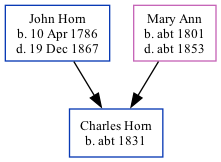

Charles Horn c1831 -
[ Home ] | [ Calendar ] | [ Surnames Index ] | [ Family History ]The child of John Horn (a laborer) and Mary Ann, Charles Horn, the three times great-uncle of <a href="I1.html">Nigel Horne</a>, was born in Margate, Kent, England <i>c.</i> 1831<span class="citation">1</span> and baptized there on Apr 10, 1831.</p><p>Throughout his life, he lived at his birthplace on Jun 6, 1841<span class="citation">1</span>.
Parents
- John was born on Apr 10, 1786
- Mary Ann was born c. 1801
Citations
- 1841 England Census Online publication - Provo, UT, USA: The Generations Network, Inc., 2006.Original data - Census Returns of England and Wales, 1841. Kew, Surrey, England: The National Archives of the UK (TNA): Public Record Office (PRO), 1841. Data imaged from the National
- 1841 England, Wales & Scotland Census - Findmypast (was age 10 and the son of the head of the household)
Media
England Births & Baptisms 1538-1975 - R_884642441
Family Tree
Generated by Ged2Site. Last updated on Jul 20, 2025